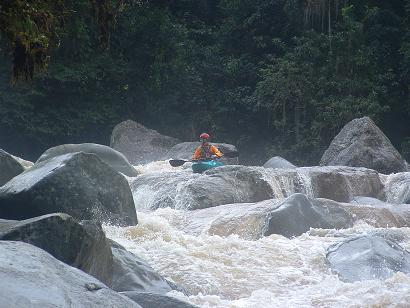
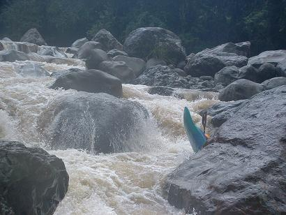
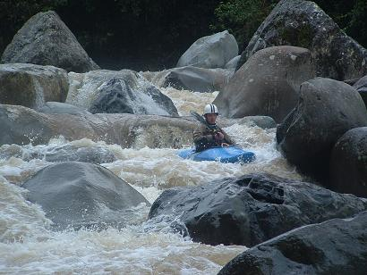
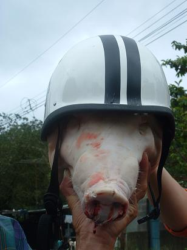
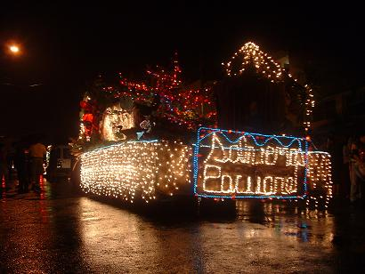
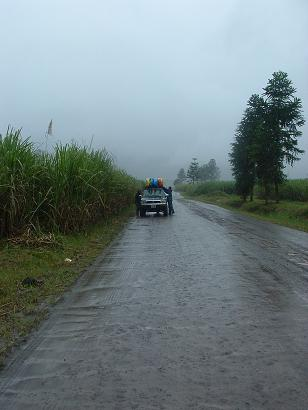
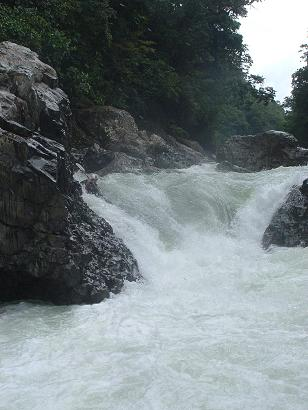
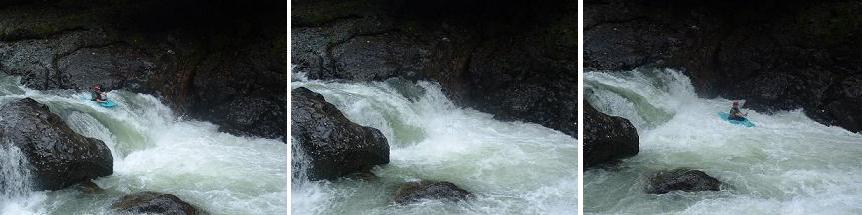
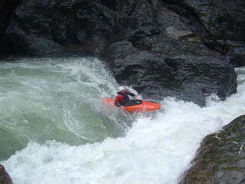
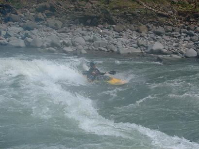

‘La indecisión es la llave a la flexibilidad’
|
||
‘La indecisión es la llave a la flexibilidad’
|
|
********************************************************************************************* Newer news can be found on scotlandnews |
| Rio Orosi, Costa Rica, December 20, 2004. | ********************************************************************************************* Boulders, narrow slots, pinning potential, getting stuck on rocks, bashing lumps out of your boat - even though it might sound like Wicklow on a good day, in fact we're still in Costa Rica. it's the Rio Orosi, but it felt like home to us. Sniff, brings a tear to your eye. The major difference is that the water is warm. One minute you're laughing with your buddies...  The next minute your buddies are laughing at you...  But no-one laughs at Der Commandante...  This is what happened to the last pig that laughed at Der Commandante...  |
| Festival of Lights, Turrialba, Costa Rica, December 19, 2004. | ********************************************************************************************* The Festival of Lights is the big parade in Turrialba just ahead of Christmas. One of the lead floats in the 2004 parade was the Save the Pacaure float. This gem of a river (referred to by National Geographic as "one of the most beautiful rivers of the world") is threatened with a hydroelectric dam.  Read about the background to this plan, and the efforts of locals to oppose it, here: http://www.riopacuare.org/ This plan is now going to a local referendum and all kinds of special interest groups are getting involved to see that the river continues to run. |
| Rain in the canefields, Costa Rica, December 17, 2004. | ********************************************************************************************* People are often surprised to find that it rains a lot, and torrentially, in Costa Rica. Just to let you know - it rains about twice as much as in Ireland. That's why they call it the rainforest, rather than just the forest. This is a picture of us retying precariously-balanced boats on our way through the sugarcane plantations to the Rio Pejibaye.  |
| The Upper and Upper Upper Pacaure, Costa Rica, December 16, 2004. | ********************************************************************************************* As with most rivers, the higher up the Pacuare you go, the more technical the rapids become. Above the Lower is the Upper, then the Upper Upper, then the Top, and finally the Headwaters. Get the idea? Here are some photos from the Upper and Upper Upper.  Simon running the Sangre Hydralico (Blood Hydraulic) rapid above Bobo's Falls. This is a nasty curling chute that feeds you into a seam hole, which then throws you out into a flow with just a little time to get back on line to drive around the corner or hit the outside wall. Jim running the river-left side of the next drop, which is known as Entry Rapid. This side of the river offers a boof move followed by a possible beating in a hole. It's so old-school, it's almost reassuring. You've been beaten so many times like this, you'll feel almost nostalgic for the Christian Brothers school. Here's a composite before/during/after beating picture.  Next up is Jumping Bobo Falls. Some of you may have seen pictures and heard stories of this infamous drop. It's all different now, following some of those heavy storms that tend to rearrange the rivers in Costa Rica. The big rock on the bottom right of the picture was formerly in the middle of the drop, creating nasty holes on both river-right and river-left. Until the next major storm, the line is driving left into the eddy, as demonstrated here by young Aaron. Get a haircut, you hippy.  |
| Lower Pacaure, Costa Rica, December 15, 2004. | ********************************************************************************************* With renewed enthusiasm, and now based in the world-renowned InterAmericano hotel in Turrialba, we hit the Lower Pacaure. This section is the most famous, and possibly most-run, in the country. Here's Ferg surfing a wave:  |
| Rio Toro, Costa Rica, early December 2004. | ********************************************************************************************* After two months on the road, we finally reach Costa Rica, one of the main stopping points of the trip. Everyone is quite happy not to be living out of the Toyota for a while and we decide to base ourselves in the town of La Virgen de Sarapique. This is the second-city of Costa Rican whitewater, within easy striking distance of the Sucio, Sarapique, Toro, Toro Amarillo, Puerto Viejo, Patria, and Poza Azul, among other rivers. We elect to begin with the Rio Toro, Casa Maquinas section. After 20 meters the Rio Toro, Casa Maquinas section, elects to finish with us by re-opening the nose of Simon's boat, which had previously been repaired following a similar incident in Mexico. The first 20 meters of the Rio Toro is a fantastic, technical boulder garden, and we are very excited at the prospect of going back there to complete the other 7,980 meters someday. We head to Turrialba, the first-city of Costa Rican whitewater, where Simon trades in his battered boat for a newer, stronger one - one more commensurate with his weight range. From his buoyancy aid, he removes his 'Pyranha Plastic Rocks!' badge and replaces it with a 'Wavesport Plastic Rocks!' badge. He also resolves to skip Christmas pudding this year. |